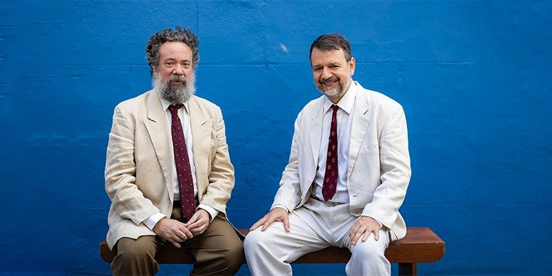
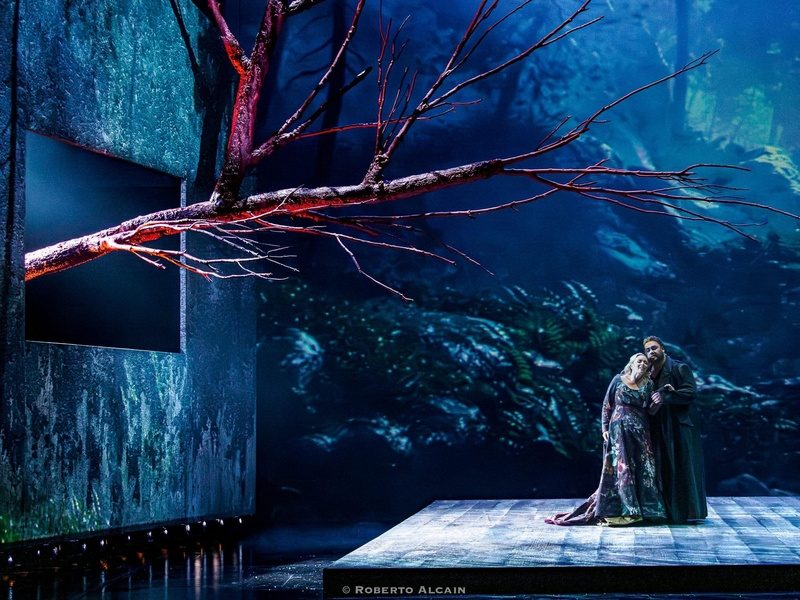

O que fazer no fim de semana em São Paulo (30/07 a 02/08)

Entre quinta-feira, 30 de julho, e domingo, 2 de agosto, a semana teatral de São Paulo reúne um sermão do século 17 encenado no Sesc Pinheiros, a estreia do novo texto da autora de Prima Facie com Drica Moraes, a despedida do solo de Regina Casé e a última récita de Tristão e Isolda, ópera que voltou ao Theatro Municipal depois de 48 anos de ausência. A seleção abaixo traz uma atração por dia, sempre com serviço completo: endereço, horários, preços e onde comprar.
Os bolsos variam. Há ingresso a R$ 15 para quem tem a credencial plena do Sesc e plateia a R$ 290 na ópera. Vale atenção ao calendário: duas das quatro indicações se despedem da cidade no domingo, 2 de agosto.
Quinta (30/07): Padre Antônio Vieira em cena no Sesc Pinheiros
O guia abre com um clássico da língua portuguesa. Sermão de Santo Antônio aos Peixes, que Padre Antônio Vieira escreveu em 1654, ganhou versão cênica com direção, dramaturgia e atuação de Moacir Chaves, que divide o palco com Márcio Vito e com o músico Gustavo Corsi. A montagem usa os peixes do sermão como alegoria da ganância, da corrupção e da exploração, e aposta na palavra do autor que Fernando Pessoa chamou de "Imperador da Língua Portuguesa". Trinta anos depois de dirigir Pedro Paulo Rangel em Sermão da Quarta-feira de Cinza, Chaves volta ao universo de Vieira em chave mais performática, com a música ao vivo funcionando como uma segunda fala.
"Os sermões do Padre Antônio Vieira ultrapassam os limites dos dogmas religiosos. Vieira olhava para a vida cotidiana, para a organização social, para a política global", disse Moacir Chaves em entrevista ao Blog do Arcanjo.

Serviço. Sermão de Santo Antônio aos Peixes. Auditório do Sesc Pinheiros (3º andar), Rua Paes Leme, 195, Pinheiros. Quinta (30), sexta (31) e sábado (1º) às 20h30, com sessão extra na sexta às 16h; temporada até 8 de agosto. As sessões de 31 de julho e 1º de agosto têm tradução em Libras. Duração: 60 minutos. Classificação: 12 anos. Ingressos a R$ 50 (inteira), R$ 25 (meia) e R$ 15 (credencial plena), no site sescsp.org.br e nas bilheterias do Sesc.
Ingressos para Sermão de Santo Antônio aos Peixes
Sexta (31/07): a nova peça da autora de Prima Facie estreia com Drica Moraes
A estreia da semana é Inter Alia, da dramaturga australiana Suzie Miller. O texto teve estreia mundial em julho de 2025 no National Theatre, em Londres, com Rosamund Pike no papel central, e chega ao Brasil um ano depois pelas mãos do mesmo produtor que trouxe Prima Facie, fenômeno de bilheteria com Débora Falabella que roda o país desde 2024. Drica Moraes vive Jessica, uma juíza empenhada em tornar o sistema judiciário mais humano, ao lado de Caco Ciocler, o marido Michael, e de Caio Cesar Passos, o filho adolescente Harry. A direção é de Rodrigo Portella, o mesmo de Tom na Fazenda. Como em Prima Facie, a autora se interessa pelo choque entre a vida pública e a privada: a rotina equilibrada da protagonista desaba quando um acontecimento inesperado atinge a própria família.
Serviço. Inter Alia. Teatro Vivo, Avenida Dr. Chucri Zaidan, 2460, Vila Cordeiro. Estreia nesta sexta (31), às 20h; sextas e sábados às 20h, domingos às 18h, até 20 de setembro. Duração: 90 minutos. Classificação: 12 anos. Ingressos a R$ 200 (inteira) e R$ 50 (preço popular, em cota promocional ligada ao plano de democratização da Lei Rouanet), na plataforma Sympla e na bilheteria do teatro.
Sábado (1º/08): a penúltima noite de Regina Casé em VIVA! VIDA!
Quem ainda não viu Regina Casé em VIVA! VIDA! tem duas chances antes do fim da temporada, marcada para 2 de agosto. No solo escrito por Estevão Ciavatta Pantoja, com direção dele e de Daniela Thomas, a atriz conduz a plateia por uma jornada que parte da formação geológica do planeta, passa pelo surgimento da vida e desemboca no cotidiano hiperconectado de hoje. A dramaturgia nasceu de conversas com os cientistas Antônio Nobre e Fábio Scarano, a cenografia de Daniela Thomas trabalha com painéis de LED e a trilha é de Amaro Freitas, expoente da nova geração do jazz brasileiro. A sessão de sábado, às 20h, deixa o domingo livre para a ópera que fecha este guia.
Serviço. VIVA! VIDA!. Teatro Sérgio Cardoso, Rua Rui Barbosa, 153, Bela Vista. Sábado (1º) às 20h; última sessão no domingo (2), às 17h. Duração: 90 minutos. Classificação: livre. Ingressos a R$ 180 (inteira) e R$ 90 (meia), com lote de democratização de acesso a R$ 50 (inteira) e R$ 25 (meia), na plataforma Sympla e na bilheteria do teatro.
Domingo (02/08): Tristão e Isolda se despede do Theatro Municipal
A última récita de Tristão e Isolda, de Richard Wagner, encerra o fim de semana no Theatro Municipal de São Paulo. A ópera foi apresentada na casa pela primeira vez em 1911, ano da inauguração do edifício, e não era montada ali desde 1978. A produção vem do Teatro de la Maestranza, de Sevilha, com direção cênica do brasileiro Allex Aguilera e regência de Roberto Minczuk à frente da Orquestra Sinfônica Municipal e do Coro Lírico. No elenco de domingo, Simon O'Neill é Tristão, Annemarie Kremer é Isolda e Luisa Francesconi canta Brangäne. São quatro horas e meia de espetáculo, com intervalo, para uma das partituras que mudaram a história da música ocidental. Depois de O Navio Fantasma, a casa volta a Wagner em grande formato.
"Há quem diga que se trata de uma ópera estática, em que nada acontece. Primeiro, qual é o problema do estatismo? Quando a história lhe propõe esse caráter, é necessário abraçá-lo", afirmou Allex Aguilera em entrevista à Revista Concerto.

Serviço. Tristão e Isolda. Theatro Municipal de São Paulo, Praça Ramos de Azevedo, s/nº, centro. Domingo (2), às 17h, última récita. Duração: 270 minutos, com intervalo. Classificação: 12 anos. Ingressos de R$ 47 a R$ 290, no site theatromunicipal.org.br e na bilheteria do theatro.